Week4
Susanna
2026-09-21
1 Playing with Plots
require(igraph)
g <- make_graph("Zachary")
plot(g)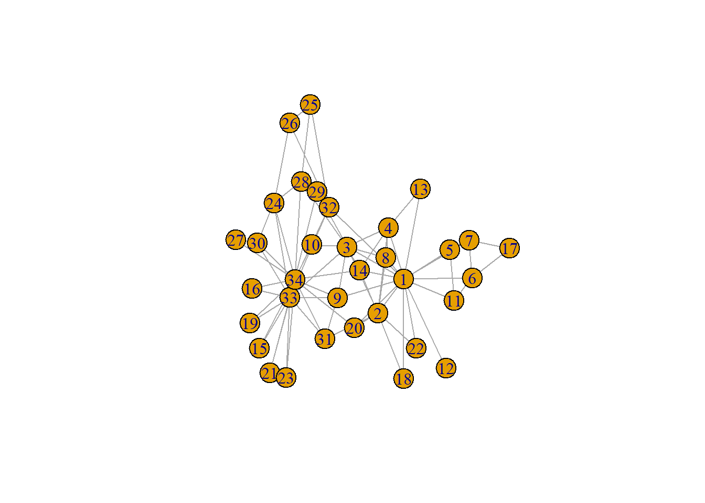
Apparently, there’s a random component to how graphs are made: placement of nodes based on popularity.
gmat <- as_adjacency_matrix(g, type = "both", sparse = FALSE)
gmat## [,1] [,2] [,3] [,4] [,5] [,6] [,7] [,8] [,9] [,10] [,11] [,12] [,13] [,14] [,15] [,16] [,17]
## [1,] 0 1 1 1 1 1 1 1 1 0 1 1 1 1 0 0 0
## [2,] 1 0 1 1 0 0 0 1 0 0 0 0 0 1 0 0 0
## [3,] 1 1 0 1 0 0 0 1 1 1 0 0 0 1 0 0 0
## [4,] 1 1 1 0 0 0 0 1 0 0 0 0 1 1 0 0 0
## [5,] 1 0 0 0 0 0 1 0 0 0 1 0 0 0 0 0 0
## [6,] 1 0 0 0 0 0 1 0 0 0 1 0 0 0 0 0 1
## [7,] 1 0 0 0 1 1 0 0 0 0 0 0 0 0 0 0 1
## [8,] 1 1 1 1 0 0 0 0 0 0 0 0 0 0 0 0 0
## [9,] 1 0 1 0 0 0 0 0 0 0 0 0 0 0 0 0 0
## [10,] 0 0 1 0 0 0 0 0 0 0 0 0 0 0 0 0 0
## [11,] 1 0 0 0 1 1 0 0 0 0 0 0 0 0 0 0 0
## [12,] 1 0 0 0 0 0 0 0 0 0 0 0 0 0 0 0 0
## [13,] 1 0 0 1 0 0 0 0 0 0 0 0 0 0 0 0 0
## [14,] 1 1 1 1 0 0 0 0 0 0 0 0 0 0 0 0 0
## [15,] 0 0 0 0 0 0 0 0 0 0 0 0 0 0 0 0 0
## [16,] 0 0 0 0 0 0 0 0 0 0 0 0 0 0 0 0 0
## [17,] 0 0 0 0 0 1 1 0 0 0 0 0 0 0 0 0 0
## [18,] 1 1 0 0 0 0 0 0 0 0 0 0 0 0 0 0 0
## [19,] 0 0 0 0 0 0 0 0 0 0 0 0 0 0 0 0 0
## [20,] 1 1 0 0 0 0 0 0 0 0 0 0 0 0 0 0 0
## [21,] 0 0 0 0 0 0 0 0 0 0 0 0 0 0 0 0 0
## [22,] 1 1 0 0 0 0 0 0 0 0 0 0 0 0 0 0 0
## [23,] 0 0 0 0 0 0 0 0 0 0 0 0 0 0 0 0 0
## [24,] 0 0 0 0 0 0 0 0 0 0 0 0 0 0 0 0 0
## [25,] 0 0 0 0 0 0 0 0 0 0 0 0 0 0 0 0 0
## [26,] 0 0 0 0 0 0 0 0 0 0 0 0 0 0 0 0 0
## [27,] 0 0 0 0 0 0 0 0 0 0 0 0 0 0 0 0 0
## [28,] 0 0 1 0 0 0 0 0 0 0 0 0 0 0 0 0 0
## [29,] 0 0 1 0 0 0 0 0 0 0 0 0 0 0 0 0 0
## [30,] 0 0 0 0 0 0 0 0 0 0 0 0 0 0 0 0 0
## [31,] 0 1 0 0 0 0 0 0 1 0 0 0 0 0 0 0 0
## [32,] 1 0 0 0 0 0 0 0 0 0 0 0 0 0 0 0 0
## [33,] 0 0 1 0 0 0 0 0 1 0 0 0 0 0 1 1 0
## [34,] 0 0 0 0 0 0 0 0 1 1 0 0 0 1 1 1 0
## [,18] [,19] [,20] [,21] [,22] [,23] [,24] [,25] [,26] [,27] [,28] [,29] [,30] [,31] [,32]
## [1,] 1 0 1 0 1 0 0 0 0 0 0 0 0 0 1
## [2,] 1 0 1 0 1 0 0 0 0 0 0 0 0 1 0
## [3,] 0 0 0 0 0 0 0 0 0 0 1 1 0 0 0
## [4,] 0 0 0 0 0 0 0 0 0 0 0 0 0 0 0
## [5,] 0 0 0 0 0 0 0 0 0 0 0 0 0 0 0
## [6,] 0 0 0 0 0 0 0 0 0 0 0 0 0 0 0
## [7,] 0 0 0 0 0 0 0 0 0 0 0 0 0 0 0
## [8,] 0 0 0 0 0 0 0 0 0 0 0 0 0 0 0
## [9,] 0 0 0 0 0 0 0 0 0 0 0 0 0 1 0
## [10,] 0 0 0 0 0 0 0 0 0 0 0 0 0 0 0
## [11,] 0 0 0 0 0 0 0 0 0 0 0 0 0 0 0
## [12,] 0 0 0 0 0 0 0 0 0 0 0 0 0 0 0
## [13,] 0 0 0 0 0 0 0 0 0 0 0 0 0 0 0
## [14,] 0 0 0 0 0 0 0 0 0 0 0 0 0 0 0
## [15,] 0 0 0 0 0 0 0 0 0 0 0 0 0 0 0
## [16,] 0 0 0 0 0 0 0 0 0 0 0 0 0 0 0
## [17,] 0 0 0 0 0 0 0 0 0 0 0 0 0 0 0
## [18,] 0 0 0 0 0 0 0 0 0 0 0 0 0 0 0
## [19,] 0 0 0 0 0 0 0 0 0 0 0 0 0 0 0
## [20,] 0 0 0 0 0 0 0 0 0 0 0 0 0 0 0
## [21,] 0 0 0 0 0 0 0 0 0 0 0 0 0 0 0
## [22,] 0 0 0 0 0 0 0 0 0 0 0 0 0 0 0
## [23,] 0 0 0 0 0 0 0 0 0 0 0 0 0 0 0
## [24,] 0 0 0 0 0 0 0 0 1 0 1 0 1 0 0
## [25,] 0 0 0 0 0 0 0 0 1 0 1 0 0 0 1
## [26,] 0 0 0 0 0 0 1 1 0 0 0 0 0 0 1
## [27,] 0 0 0 0 0 0 0 0 0 0 0 0 1 0 0
## [28,] 0 0 0 0 0 0 1 1 0 0 0 0 0 0 0
## [29,] 0 0 0 0 0 0 0 0 0 0 0 0 0 0 1
## [30,] 0 0 0 0 0 0 1 0 0 1 0 0 0 0 0
## [31,] 0 0 0 0 0 0 0 0 0 0 0 0 0 0 0
## [32,] 0 0 0 0 0 0 0 1 1 0 0 1 0 0 0
## [33,] 0 1 0 1 0 1 1 0 0 0 0 0 1 1 1
## [34,] 0 1 1 1 0 1 1 0 0 1 1 1 1 1 1
## [,33] [,34]
## [1,] 0 0
## [2,] 0 0
## [3,] 1 0
## [4,] 0 0
## [5,] 0 0
## [6,] 0 0
## [7,] 0 0
## [8,] 0 0
## [9,] 1 1
## [10,] 0 1
## [11,] 0 0
## [12,] 0 0
## [13,] 0 0
## [14,] 0 1
## [15,] 1 1
## [16,] 1 1
## [17,] 0 0
## [18,] 0 0
## [19,] 1 1
## [20,] 0 1
## [21,] 1 1
## [22,] 0 0
## [23,] 1 1
## [24,] 1 1
## [25,] 0 0
## [26,] 0 0
## [27,] 0 1
## [28,] 0 1
## [29,] 0 1
## [30,] 1 1
## [31,] 1 1
## [32,] 1 1
## [33,] 0 1
## [34,] 1 0g is in igraph format, we just turned it back into a matrix
isSymmetric(gmat)## [1] TRUEIf symmetric, network is undirected
# be aware that directed graphs are considered as undirected. but g is undirected.
igraph::transitivity(g, type = c("localundirected"), isolates = c("NaN", "zero"))## [1] 0.1500000 0.3333333 0.2444444 0.6666667 0.6666667 0.5000000 0.5000000 1.0000000 0.5000000
## [10] 0.0000000 0.6666667 NaN 1.0000000 0.6000000 1.0000000 1.0000000 1.0000000 1.0000000
## [19] 1.0000000 0.3333333 1.0000000 1.0000000 1.0000000 0.4000000 0.3333333 0.3333333 1.0000000
## [28] 0.1666667 0.3333333 0.6666667 0.5000000 0.2000000 0.1969697 0.1102941We’re counting triangles now. No person is standing out.
igraph::betweenness(g, directed = FALSE)## [1] 231.0714286 28.4785714 75.8507937 6.2880952 0.3333333 15.8333333 15.8333333 0.0000000
## [9] 29.5293651 0.4476190 0.3333333 0.0000000 0.0000000 24.2158730 0.0000000 0.0000000
## [17] 0.0000000 0.0000000 0.0000000 17.1468254 0.0000000 0.0000000 0.0000000 9.3000000
## [25] 1.1666667 2.0277778 0.0000000 11.7920635 0.9476190 1.5428571 7.6095238 73.0095238
## [33] 76.6904762 160.55158731 and 34 have a VERY high betweenness score. Not very visible in initial graph, so if we want to focus on this finding, we want a graph where 1 and 34 do not overlap so much with other nodes. 3 is also interesting: bridge beween bridge?
How can we emphasise this in visualisation?
hue palet, vibrancy based on betweenness (standardised) size based on betweenness or change layout
igraph::dyad_census(g)## Warning: `dyad_census()` requires a directed graph.## $mut
## [1] 78
##
## $asym
## [1] 0
##
## $null
## [1] 483igraph::triad_census(g)## Warning in triad_census_impl(graph = graph): Triad census called on an undirected graph. All connections will be treated as mutual.
## Source: misc/motifs.c:1157## [1] 3971 0 1575 0 0 0 0 0 0 0 393 0 0 0 0 45# I will use sna because it shows the names of the triads as well.
sna::triad.census(gmat)## 003 012 102 021D 021U 021C 111D 111U 030T 030C 201 120D 120U 120C 210 300
## [1,] 3971 0 1575 0 0 0 0 0 0 0 393 0 0 0 0 45unloadNamespace("sna") #I will detach this package again, otherwise it will interfere with all kind of functions from igraph, and my students will hate me for that.Transitivity: how many triads are closed divided by the total amount of triads that are or could have been closed. 300 is fully closed: - last digit: number of dyads without ties - second digit: number of dyads with one tie - first digit: number of dyads with two ties (mutual dyads) - specific subtype: C: cyclic D: downward U: upward T: transitive
Uitgaand van actorperspectief wordt één triade 3 keer geteld (één keer vanuit elke betrokken actor).
Manually calculating global transitivity:
igraph::transitivity(g, type = "global")## [1] 0.2556818sna::gtrans(gmat)## [1] 0.2556818triad_g <- data.frame(sna::triad.census(gmat))
transitivity_g <- (3 * triad_g$X300)/(triad_g$X201 + 3 * triad_g$X300)
transitivity_g## [1] 0.2556818(local transitivity would be transitivity in network of ego)
1 and 34 are not connected, both have high betweenness, but low local transitivity - let’s visualise that story:
# changing V
V(g)$size = betweenness(g, normalized = T, directed = FALSE) * 60 + 10 #after some trial and error
plot(g, mode = "undirected")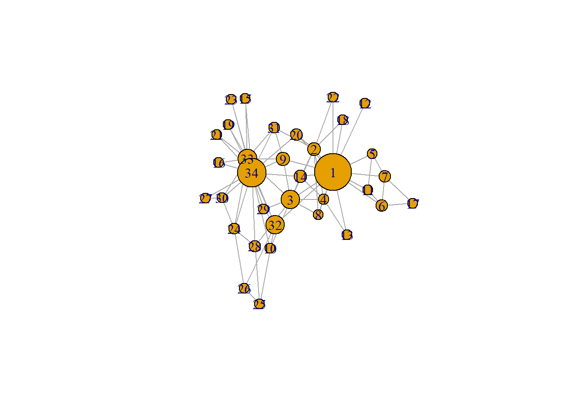
V is about vertices, e is about edges
To make it look nice in article, define size of plot window beforehand for alllll images!
set.seed(2345)
l <- layout_with_mds(g) #https://igraph.org/r/doc/layout_with_mds.html
plot(g, layout = l)
l #let us take a look at the coordinates## [,1] [,2]
## [1,] 1.070931935 -0.172458113
## [2,] 0.732844464 0.754023309
## [3,] 0.100582299 0.397693607
## [4,] 0.708246655 0.570205545
## [5,] 1.816293170 -0.120778206
## [6,] 1.881329566 -0.135518854
## [7,] 1.881329566 -0.135518854
## [8,] 0.812606714 0.472619437
## [9,] -0.003769996 0.615513628
## [10,] -0.685680315 0.621065149
## [11,] 1.816293170 -0.120778206
## [12,] 1.621247830 -0.065820692
## [13,] 1.637845123 0.001789972
## [14,] 0.067317230 0.681421148
## [15,] -1.796316404 0.351417630
## [16,] -1.796316404 0.351417630
## [17,] 2.775260452 -0.124317652
## [18,] 1.616210024 0.182510197
## [19,] -1.796316404 0.351417630
## [20,] 0.048362858 0.566654982
## [21,] -1.796316404 0.351417630
## [22,] 1.616210024 0.182510197
## [23,] -1.796316404 0.351417630
## [24,] -1.891240567 -0.799574907
## [25,] -0.258345165 -2.006346563
## [26,] -0.360530857 -2.131642875
## [27,] -1.865177401 0.128596564
## [28,] -0.760226022 -0.529392331
## [29,] -0.710979936 -0.299960128
## [30,] -1.898426916 -0.149398746
## [31,] -0.568691923 0.804189411
## [32,] -0.048136037 -0.870967614
## [33,] -1.023681000 -0.035802363
## [34,] -1.146442924 -0.037605192l[1, 1] <- 4
l[34, 1] <- -3.5
plot(g, layout = l)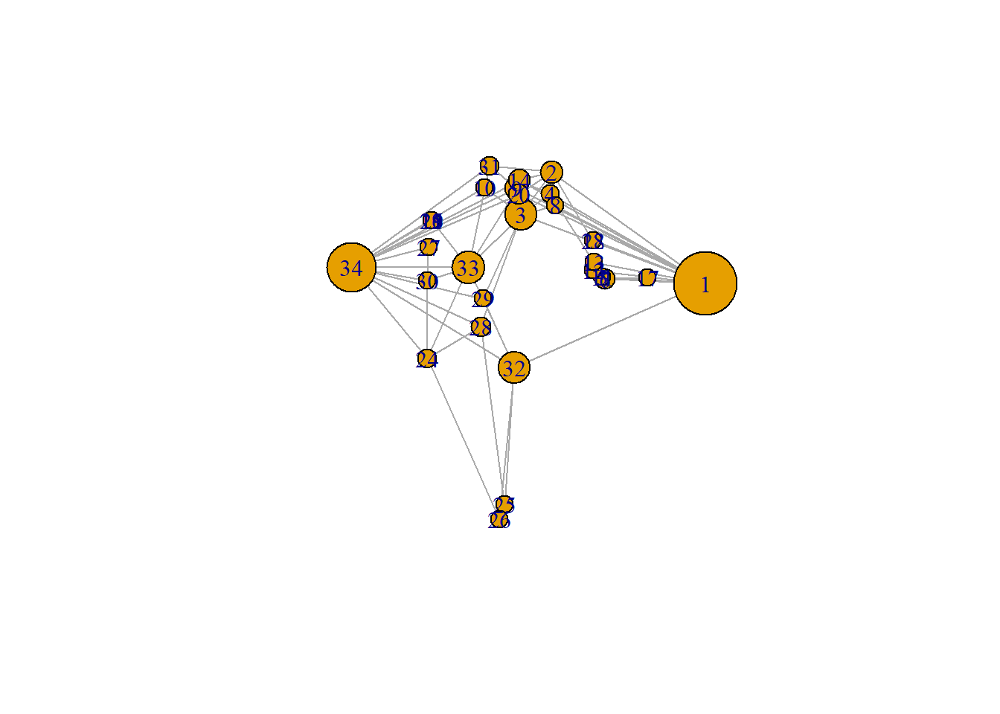
Second image suggests conflict, group being pulled apart by 34 and 1. In article: explain that 1 and 34 were manually placed at opposite sides of the network to illustrate the described process.2 Plotting On Ashwin’s data
load("./data/IndividualCharacteristics.RData")
load("./data/NetworkCharacteristics.RData")# view(hanging[[1]])
hanging_df_t1 <- as.data.frame(hanging[[1]][1])
class(hanging_df_t1)## [1] "data.frame"# view(hanging_df_t1)
strong_netw_t1 <- data.matrix(hanging_df_t1)
strong_netw_t1[strong_netw_t1==9]<-NA
class(strong_netw_t1)## [1] "matrix" "array"# view(strong_netw_t1)
hanging_df_t2 <- as.data.frame(hanging[[1]][2])
class(hanging_df_t2)## [1] "data.frame"# view(hanging_df_t2)
strong_netw_t2 <- data.matrix(hanging_df_t2)
strong_netw_t2[strong_netw_t2==9]<-NA
class(strong_netw_t2)## [1] "matrix" "array"Making own matrix
testm <- matrix(NA, nrow = 4, ncol = 4)
testm[1,1] <- 0
testm[1,2] <- 0
testm[1,3] <- NA
testm[3,1] <- 1
testm[3,2] <- 1
testm[4,2] <- 0
testm[4,2] <- 1
testm## [,1] [,2] [,3] [,4]
## [1,] 0 0 NA NA
## [2,] NA NA NA NA
## [3,] 1 1 NA NA
## [4,] NA 1 NA NAmrow <- rowSums(is.na(testm)) == nrow(testm)
mcol <- colSums(is.na(testm)) == ncol(testm)
mtot <- which(mrow & mcol)
mtot## integer(0)testm[which(mrow), ] <- 0
testm## [,1] [,2] [,3] [,4]
## [1,] 0 0 NA NA
## [2,] 0 0 0 0
## [3,] 1 1 NA NA
## [4,] NA 1 NA NArequire(igraph)
uni1nona <- strong_netw_t1
uni1nona[is.na(uni1nona)] <- 0
uni1 <- igraph::graph_from_adjacency_matrix(uni1nona, mode = "directed", weighted = NULL, diag = TRUE, add.colnames = NA,
add.rownames = NA)
plot(uni1)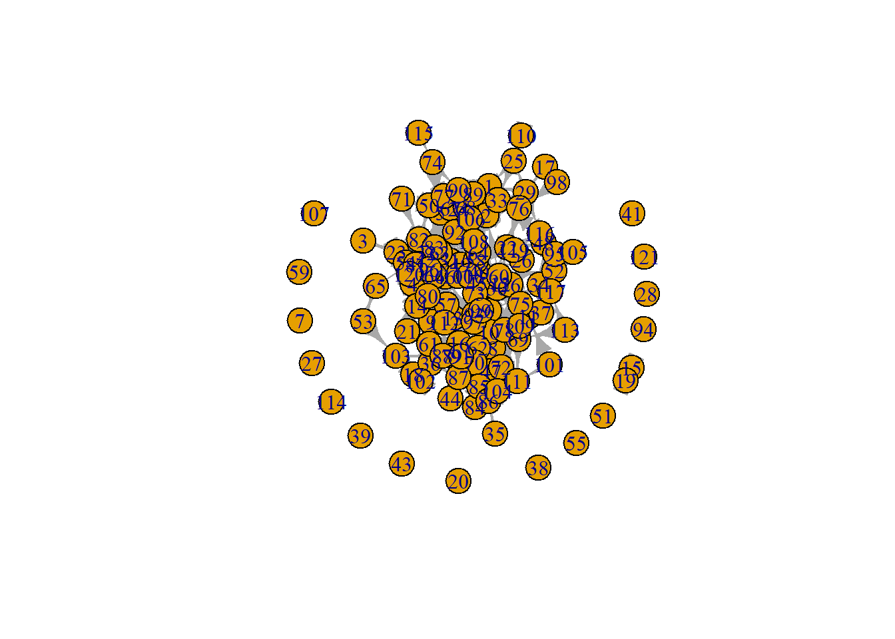
Yay I have a graph!!!V(uni1)$size = igraph::degree(uni1) * 1.05 + 5
plot(uni1)
plot(uni1,
edge.arrow.size = 0.1,
vertex.label.cex = 0.4,
vertex.size = 10)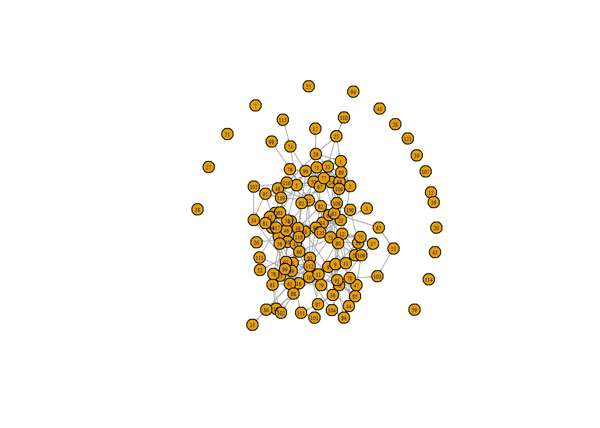
V(uni1)$size = igraph::degree(uni1)*0.5 + 5
plot(uni1,
edge.arrow.size = 0.1,
vertex.label.cex = 0.4)
w1international <- international[[1]]
w1international <- w1international[, "W1INTERNATIONAL"]
w1international## 30001 30002 30003 30004 30005 30006 30007 30008 30009 30010 30011 30012 30013 30014 30015 30016
## 2 2 2 2 2 2 NA 2 2 2 2 2 2 1 2 2
## 30017 30018 30019 30020 30021 30022 30023 30025 30026 30027 30028 30029 30030 30031 30032 30033
## 2 2 2 2 2 2 2 2 1 2 2 2 2 2 2 2
## 30034 30035 30036 30037 30038 30039 30040 30041 30042 30043 30044 30045 30046 30047 30048 30049
## NA 2 2 2 2 NA NA 2 NA 2 2 2 2 2 2 2
## 30050 30051 30052 30053 30054 30055 30056 30057 30058 30059 30060 30061 30062 30063 30064 30065
## 2 2 NA 2 2 2 NA 2 2 2 NA 2 2 2 2 2
## 30066 30067 30068 30069 30070 30071 30072 30073 30074 30075 30076 30077 30078 30079 30080 30081
## 2 2 2 2 2 2 2 2 2 2 2 2 2 2 NA 2
## 30082 30083 30084 30085 30086 30087 30088 30089 30090 30091 30092 30093 30094 30095 30096 30097
## 2 2 2 2 2 2 2 2 2 2 2 NA 2 NA 2 2
## 30098 30099 30100 30101 30102 30103 30104 30105 30106 30107 30108 30109 30110 30111 30112 30113
## 2 2 2 2 2 2 2 2 2 2 NA 2 2 2 2 2
## 30114 30115 30116 30117 30118 30119 30120 30121 30122
## 2 NA 2 2 2 2 2 2 1print(uni1)## IGRAPH a8203e0 D--- 121 395 --
## + attr: size (v/n)
## + edges from a8203e0:
## [1] 1-> 2 1-> 24 1-> 33 1-> 68 1-> 89 1->106 2-> 89 2->106 3-> 23 4-> 81 5-> 32 5-> 50
## [13] 5-> 58 5-> 63 5-> 67 5-> 77 5-> 90 5-> 92 6-> 11 6-> 45 6-> 49 6-> 62 6-> 78 6-> 99
## [25] 6->118 8-> 91 9-> 13 9-> 14 9-> 36 9-> 57 9-> 80 9-> 83 9-> 88 12-> 2 12-> 11 12-> 22
## [37] 12-> 37 12-> 57 12-> 60 12-> 75 12->106 12->109 13-> 9 13-> 12 13-> 57 13-> 79 15-> 19 16-> 79
## [49] 16-> 88 16-> 93 16-> 97 17-> 29 18-> 88 18->102 19-> 15 21-> 4 21-> 88 21->112 22-> 48 22-> 76
## [61] 22->116 23-> 3 23-> 54 23-> 83 23-> 96 23->120 24-> 2 24-> 33 24-> 50 24-> 67 24-> 77 24-> 83
## [73] 24-> 89 24->106 25-> 1 25-> 33 25->110 29-> 1 29-> 17 29-> 22 29-> 25 29-> 33 29->116 30-> 8
## [85] 30-> 22 30-> 56 30-> 58 31-> 4 31-> 32 31-> 40 31-> 42 31-> 46 31-> 63 31-> 66 31-> 67 31->118
## + ... omitted several edges#edges <- igraph::as_data_frame(uni1, what = "edges")
#edges
#uni2 <- graph_from_data_frame(edges, directed = TRUE, vertices = studentids)
#vertex_attr_names(uni1)
#V(uni1)$international <- w1international
#V(uni1)$color <- ifelse(V(uni1)$w1international == 1, "blue", "orange")
length(w1international)## [1] 121length(V(uni1))## [1] 121I think I lost the connection to the original IDs. Let’s try again
class(hanging_df_t2)## [1] "data.frame"hangingt2nona <- hanging_df_t2
hangingt2nona[hangingt2nona==9]<- 0
hangingt2nona <- as.matrix(hangingt2nona)
hangingt2 <- graph_from_adjacency_matrix(hangingt2nona, mode = "directed", weighted = NULL, diag = TRUE, add.colnames = NA, add.rownames = NA)
plot(hangingt2) Ugly version succeeded. Now, change size based on degree and make it a
little prettier:
Ugly version succeeded. Now, change size based on degree and make it a
little prettier:
V(hangingt2)$size = igraph::degree(hangingt2)*0.5 + 5
plot(hangingt2,
edge.arrow.size = 0.1,
vertex.label.cex = 0.4)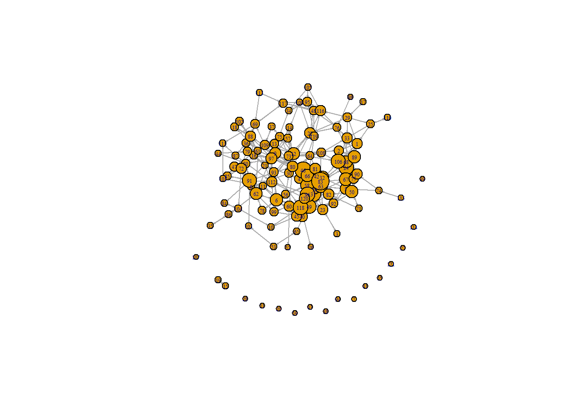
Not bad! Okay this is what failed last time, let’s see if Nina’s code saves me:#first isolate international wave 2
w2international <- international[[1]]
w2international <- w2international[, "W2INTERNATIONAL"]
w2international## 30001 30002 30003 30004 30005 30006 30007 30008 30009 30010 30011 30012 30013 30014 30015 30016
## 2 2 NA NA 2 2 2 2 2 NA 2 2 2 1 2 2
## 30017 30018 30019 30020 30021 30022 30023 30025 30026 30027 30028 30029 30030 30031 30032 30033
## 2 2 2 2 2 2 2 NA NA 2 2 2 2 NA NA 2
## 30034 30035 30036 30037 30038 30039 30040 30041 30042 30043 30044 30045 30046 30047 30048 30049
## NA 2 2 2 2 2 2 2 2 2 2 2 2 2 2 2
## 30050 30051 30052 30053 30054 30055 30056 30057 30058 30059 30060 30061 30062 30063 30064 30065
## 2 2 2 2 2 2 2 2 2 NA 2 2 2 2 2 2
## 30066 30067 30068 30069 30070 30071 30072 30073 30074 30075 30076 30077 30078 30079 30080 30081
## 2 2 NA 2 2 2 2 2 2 2 2 NA 2 2 NA 2
## 30082 30083 30084 30085 30086 30087 30088 30089 30090 30091 30092 30093 30094 30095 30096 30097
## 2 2 2 2 2 2 2 2 NA 2 2 NA 2 2 2 2
## 30098 30099 30100 30101 30102 30103 30104 30105 30106 30107 30108 30109 30110 30111 30112 30113
## 2 2 2 2 NA 2 2 2 2 2 2 2 2 2 2 2
## 30114 30115 30116 30117 30118 30119 30120 30121 30122
## 2 2 2 2 2 2 2 2 2#credits to nina's lab journal
colourinternational <- ifelse(w2international==1, "purple", "cyan4") #I thought I tried this before???
plot(hangingt2,
vertex.color = colourinternational, # nice color for the vertices
vertex.frame.color = "gray", # we'll put a gray frame around vertices
vertex.label.color = "black", # not that ugly blue color for the labels (names)
vertex.label.cex = 0.4, # make the label a bit smaller too
vertex.label.dist = 0.9, # we'll pull the labels a bit away from the vertices
edge.curved = 0.2, # curved edges is always a nice touch
edge.arrow.size = 0.1)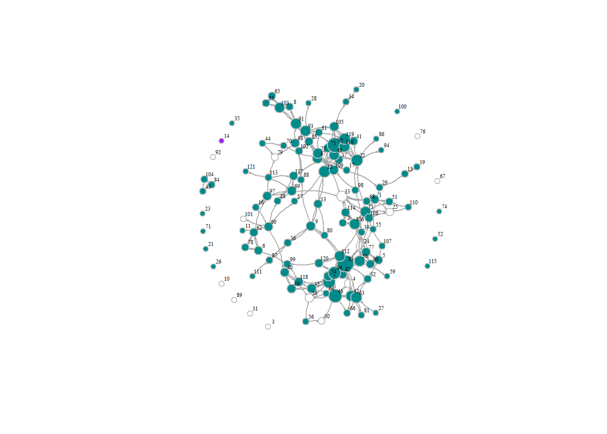
Yay it worked! It automatically makes all NAs white - that’s nice! I only see one international, and they’re very isolated… :(Let’s try the same with a more equally distributed attribute like gender:
#first isolate gender wave 2
w2gender <- gender[[1]]
w2gender <- w2gender[, "T2GENDER"]
w2gender## 30001 30002 30003 30004 30005 30006 30007 30008 30009 30010 30011 30012 30013 30014 30015 30016
## 2 2 NA 2 1 2 1 2 2 NA 2 1 2 2 2 2
## 30017 30018 30019 30020 30021 30022 30023 30025 30026 30027 30028 30029 30030 30031 30032 30033
## 2 2 2 2 2 1 2 1 1 1 2 1 2 2 NA 2
## 30034 30035 30036 30037 30038 30039 30040 30041 30042 30043 30044 30045 30046 30047 30048 30049
## 2 2 2 2 1 2 1 2 2 2 2 2 1 2 1 2
## 30050 30051 30052 30053 30054 30055 30056 30057 30058 30059 30060 30061 30062 30063 30064 30065
## 2 1 1 1 2 2 2 2 2 1 1 2 2 2 2 1
## 30066 30067 30068 30069 30070 30071 30072 30073 30074 30075 30076 30077 30078 30079 30080 30081
## 1 2 NA 1 2 2 1 1 1 1 1 NA 1 2 2 2
## 30082 30083 30084 30085 30086 30087 30088 30089 30090 30091 30092 30093 30094 30095 30096 30097
## 2 1 1 2 1 2 2 2 NA 1 2 NA 2 1 2 2
## 30098 30099 30100 30101 30102 30103 30104 30105 30106 30107 30108 30109 30110 30111 30112 30113
## 2 1 2 2 2 2 2 2 2 2 2 1 1 1 2 2
## 30114 30115 30116 30117 30118 30119 30120 30121 30122
## 2 2 1 2 2 2 2 2 1#colour based on gender
colourgender <- ifelse(w2gender==1, "thistle1", "aquamarine")
#plot
plot(hangingt2,
vertex.color = colourgender, # nice color for the vertices
vertex.frame.color = "gray", # we'll put a gray frame around vertices
vertex.label.color = "black", # not that ugly blue color for the labels (names)
vertex.label.cex = 0.4, # make the label a bit smaller too
vertex.label.dist = 0.9, # we'll pull the labels a bit away from the vertices
edge.curved = 0.2, # curved edges is always a nice touch
edge.arrow.size = 0.1)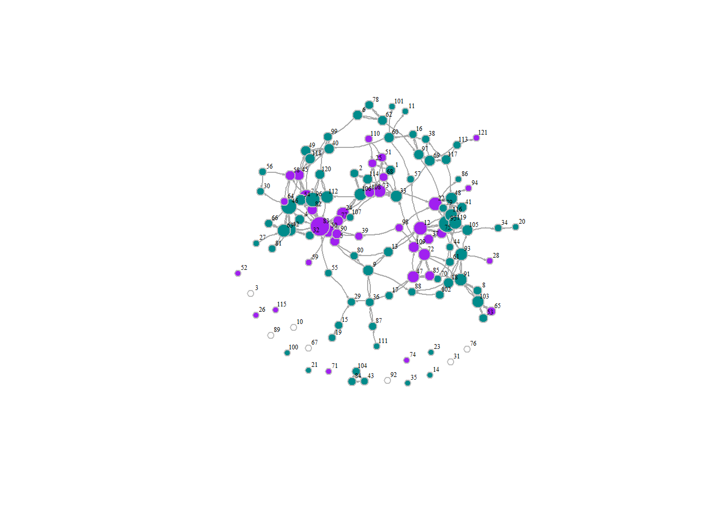
Oooooh fun! Interesting, it seems like there isn’t a lot of gender segregation going on. I guess people have somewhat grown out of that by the time they start uni!I do feel like the size is a bit too small now. Let’s see if we can do something about that:
colourgender2 <- ifelse(w2gender==1, "thistle1", "aquamarine")
V(hangingt2)$size = igraph::degree(hangingt2)*0.7 + 7
plot(hangingt2,
vertex.color = colourgender, # nice color for the vertices
vertex.frame.color = "gray", # we'll put a gray frame around vertices
vertex.label.color = "black", # not that ugly blue color for the labels (names)
vertex.label.cex = 0.4, # make the label a bit smaller too
vertex.label.dist = 0.5, # we'll pull the labels a bit away from the vertices
edge.curved = 0.2, # curved edges is always a nice touch
edge.arrow.size = 0.1)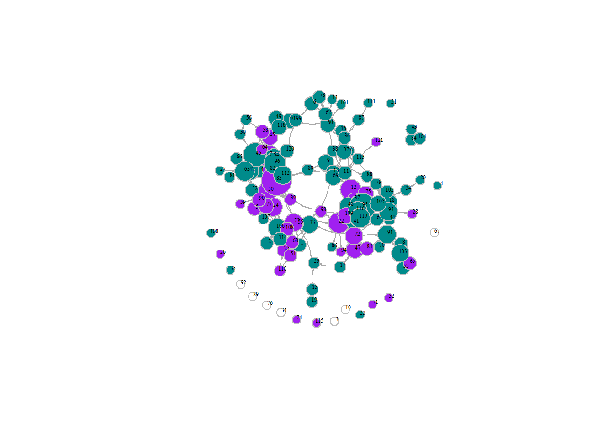
Trying some other things in graphic design of plot:
V(hangingt2)$size = igraph::degree(hangingt2)*0.7 + 7
plot(hangingt2,
vertex.color = colourgender, # nice color for the vertices
vertex.frame.color = "gray", # we'll put a gray frame around vertices
vertex.label.color = "black", # not that ugly blue color for the labels (names)
vertex.label.cex = 0.4, # make the label a bit smaller too
vertex.label.dist = 0.5, # we'll pull the labels a bit away from the vertices
edge.curved = 0.2, # curved edges is always a nice touch
edge.arrow.size = 0.1,
edge.color = "grey75")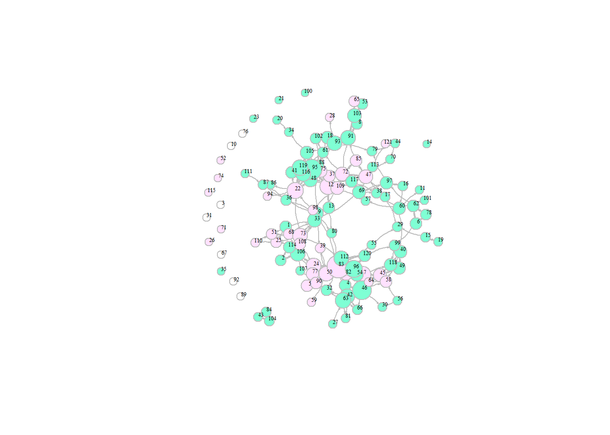
I like this! I feel like I’m seeing three clusters, two bigger ones and a smaller one. Particularly in the two bigger groups, there’s people with a high degree. Towards the edge of the graph, degrees are smaller. 39 does not have a very high degree, but does seem to form a bridge between the two bigger groups. Maybe I can do something with betweenness?
V(hangingt2)$size = igraph::betweenness(hangingt2)*0.7 + 7
plot(hangingt2,
vertex.color = colourgender, # nice color for the vertices
vertex.frame.color = "gray", # we'll put a gray frame around vertices
vertex.label.color = "black", # not that ugly blue color for the labels (names)
vertex.label.cex = 0.4, # make the label a bit smaller too
vertex.label.dist = 0.9, # we'll pull the labels a bit away from the vertices
edge.curved = 0.2, # curved edges is always a nice touch
edge.arrow.size = 0.1)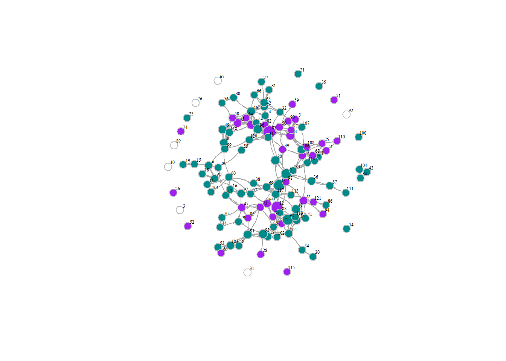
OOF. Looks like some people have such a high betweenness score that this does not work at all. Maybe if I normalise it though?
V(hangingt2)$size = betweenness(hangingt2, normalized = T, directed = TRUE) * 60 + 7
plot(hangingt2,
vertex.color = colourgender, # nice color for the vertices
vertex.frame.color = "gray", # we'll put a gray frame around vertices
vertex.label.color = "black", # not that ugly blue color for the labels (names)
vertex.label.cex = 0.4, # make the label a bit smaller too
vertex.label.dist = 0.9, # we'll pull the labels a bit away from the vertices
edge.curved = 0.2, # curved edges is always a nice touch
edge.arrow.size = 0.1)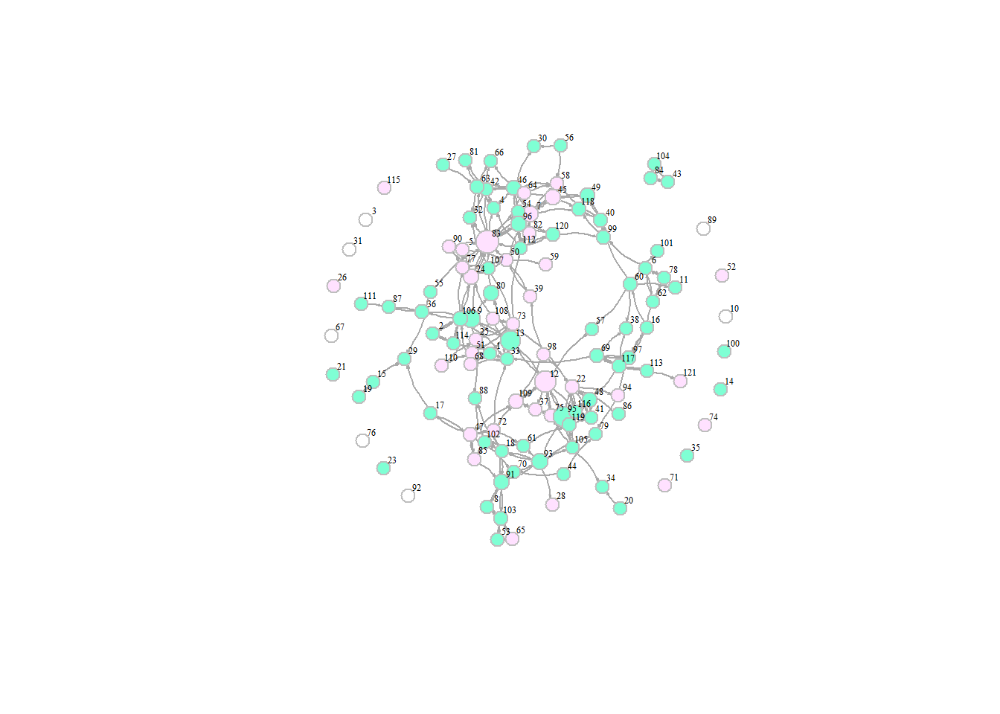
Hmmm weird. We don’t actually see huge differences now. I kind of want to take a look at the betweenness scores themselves…
igraph::betweenness(hangingt2, directed = TRUE)## [1] 1.000000 0.000000 0.000000 0.000000 3.500000 52.000000 391.184921
## [8] 0.000000 577.538889 0.000000 0.000000 983.977778 890.077778 0.000000
## [15] 1.000000 79.422222 3.000000 73.500000 0.000000 0.000000 0.000000
## [22] 139.500000 0.000000 340.385714 0.000000 0.000000 0.000000 0.000000
## [29] 0.000000 0.000000 0.000000 0.000000 0.000000 0.000000 0.000000
## [36] 129.000000 13.500000 0.000000 29.000000 152.190079 0.000000 79.339683
## [43] 0.000000 0.000000 265.630556 233.002381 85.950000 232.994444 249.874603
## [50] 74.928571 0.000000 0.000000 0.000000 0.000000 0.000000 0.000000
## [57] 0.000000 0.000000 0.000000 102.422222 29.533333 62.000000 105.339683
## [64] 0.000000 0.000000 0.000000 0.000000 0.000000 142.088889 0.000000
## [71] 0.000000 48.983333 80.900000 0.000000 18.500000 0.000000 0.000000
## [78] 0.000000 0.000000 347.538889 0.000000 13.852381 1164.787302 0.000000
## [85] 10.000000 0.000000 47.000000 0.000000 0.000000 3.285714 275.483333
## [92] 0.000000 390.483333 0.000000 827.777778 314.206349 157.422222 0.000000
## [99] 100.619048 0.000000 0.000000 14.666667 132.000000 0.000000 50.116667
## [106] 248.500000 0.000000 9.000000 209.400000 0.000000 0.000000 54.119048
## [113] 0.000000 0.500000 0.000000 37.416667 171.300000 88.476190 88.950000
## [120] 84.833333 0.000000I do see a lot of variation in here. Not sure why that is not turning up in the graph. Maybe the normalised scores are very small. I could multiply with a higher number:
V(hangingt2)$size = betweenness(hangingt2, normalized = T, directed = TRUE) * 250 + 7
plot(hangingt2,
vertex.color = colourgender, # nice color for the vertices
vertex.frame.color = "gray", # we'll put a gray frame around vertices
vertex.label.color = "black", # not that ugly blue color for the labels (names)
vertex.label.cex = 0.4, # make the label a bit smaller too
vertex.label.dist = 0.9, # we'll pull the labels a bit away from the vertices
edge.curved = 0.2, # curved edges is always a nice touch
edge.arrow.size = 0.1)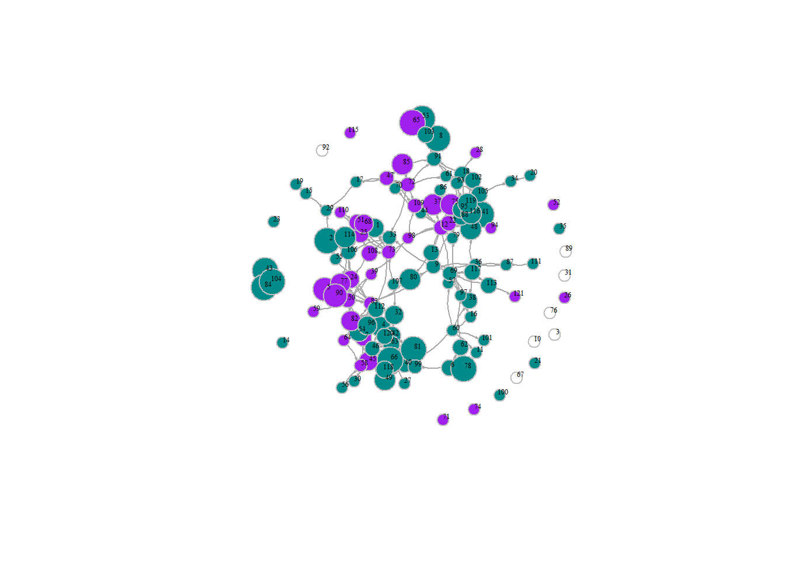
That’s better! We still see the two big groups, with members who have a high betweenness score. 13, 9, and 18 stand out with their middle position between the two groups. 39’s betweenness score is actually not as large as I thought it would be. Good to know!
Now let’s try transitivity, which may be relevant to understand the closeness of the observed friend/‘hanging’ groups.
V(hangingt2)$size = igraph::transitivity(hangingt2, type = "local", isolates = "zero")*10 + 7
plot(hangingt2,
vertex.color = colourgender, # nice color for the vertices
vertex.frame.color = "gray", # we'll put a gray frame around vertices
vertex.label.color = "black", # not that ugly blue color for the labels (names)
vertex.label.cex = 0.4, # make the label a bit smaller too
vertex.label.dist = 0.5, # we'll pull the labels a bit away from the vertices
edge.curved = 0.2, # curved edges is always a nice touch
edge.arrow.size = 0.1)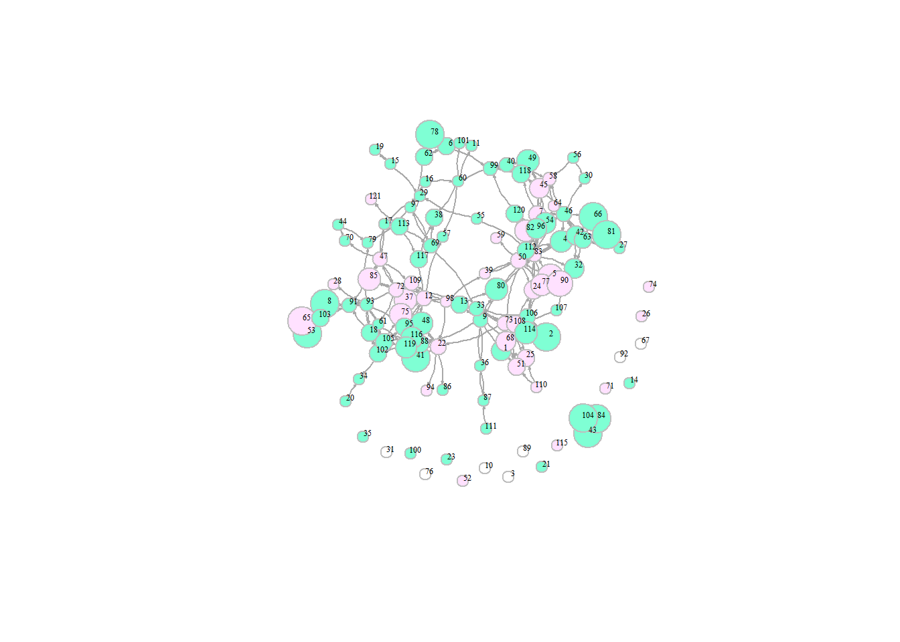
Cool! The triads at the edges of the graph have a relatively high transitivity score. 83 and 95, who had a very high degree, don’t stand out now. What is their local transitivity score actually?
igraph::transitivity(hangingt2, type = "local", isolates = "zero")## [1] 0.5000000 1.0000000 0.0000000 0.6000000 0.8333333 0.3333333 0.3611111 1.0000000 0.2000000
## [10] 0.0000000 0.0000000 0.2380952 0.3333333 0.0000000 0.0000000 0.0000000 0.0000000 0.3333333
## [19] 0.0000000 0.0000000 0.0000000 0.2777778 0.0000000 0.4285714 0.3333333 0.0000000 0.0000000
## [28] 0.0000000 0.0000000 0.0000000 0.0000000 0.5000000 0.1785714 0.0000000 0.0000000 0.0000000
## [37] 0.6666667 0.3333333 0.0000000 0.2000000 1.0000000 0.4761905 1.0000000 0.0000000 0.5000000
## [46] 0.2444444 0.2000000 0.6666667 0.6666667 0.2500000 0.3333333 0.0000000 1.0000000 0.5714286
## [55] 0.0000000 0.0000000 0.0000000 0.1000000 0.0000000 0.0000000 0.0000000 0.3333333 0.3571429
## [64] 0.0000000 1.0000000 1.0000000 0.0000000 0.5000000 0.2000000 0.0000000 0.0000000 0.2000000
## [73] 0.1785714 0.0000000 0.6666667 0.0000000 0.6000000 1.0000000 0.0000000 0.6666667 1.0000000
## [82] 0.6000000 0.1500000 1.0000000 0.6666667 0.0000000 0.0000000 0.3333333 0.0000000 0.8333333
## [91] 0.2000000 0.0000000 0.0952381 0.0000000 0.4000000 0.5238095 0.0000000 0.0000000 0.1666667
## [100] 0.0000000 0.0000000 0.3333333 0.3333333 1.0000000 0.3333333 0.2666667 0.0000000 0.3333333
## [109] 0.2000000 0.0000000 0.0000000 0.3333333 0.3333333 0.6666667 0.0000000 0.6190476 0.3333333
## [118] 0.4000000 0.5714286 0.3333333 0.0000000Yeah, their transitivity is very average. So we have two people (83 and 95) who are hanging out with lots of others, who sort of cluster around them. Their friends however are not necessarily super connected to one another, so it doesn’t seem like they are super tight friend groups - just two popular kids. 83 and 95 are not hanging out together.
I think the one based on degree is most informative of this story. So let’s get that one back on the screen again and see if we can make it even prettier:
colourgender2 <- ifelse(w2gender==1, "goldenrod1", "firebrick")
V(hangingt2)$size = igraph::degree(hangingt2)*0.9 + 7
E(hangingt2)$width <- edge_betweenness(hangingt2) * 0.01 # Edge width based on betweenness
plot(hangingt2,
vertex.color = adjustcolor(colourgender2, alpha.f = .4),
vertex.frame.color = "gray", # we'll put a gray frame around vertices
vertex.label.color = "black", # not that ugly blue color for the labels (names)
vertex.label.cex = 0.4, # make the label a bit smaller too
edge.curved = 0.2, # curved edges is always a nice touch
edge.arrow.size = 0.1,
edge.color = "gray",
layout=layout.fruchterman.reingold, main="fruchterman.reingold") #based on attraction between connected notes and repulsion between non-connected nodes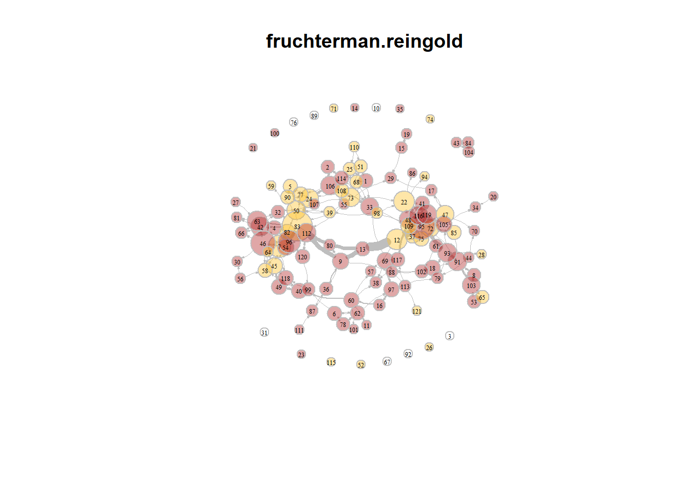
3 Webscraping tutorial
#install.packages("xml2")
require(xml2)## Loading required package: xml2## Warning: package 'xml2' was built under R version 4.5.3#install.packages("rvest")
require(rvest)## Loading required package: rvest## Warning: package 'rvest' was built under R version 4.5.3##
## Attaching package: 'rvest'## The following object is masked from 'package:readr':
##
## guess_encodingurl <- "https://nos.nl/zoeken?q=meertaligheid&page=1"
nos <- read_html(url)
#elements: alle elementen, element: één element
lijst <- nos %>% html_elements("main") %>%
html_elements("ul") %>%
html_elements("li")
lijst[1] %>% html_children %>% html_attr(name="href")## [1] "/liveblog/2618709-trump-mag-wk-beker-uitreiken-neymar-ook-vraagteken-voor-tweede-duel-brazilie"lijst[1] %>% html_elements("time") %>%
html_attr(name="datetime")## [1] "2026-06-15T15:50:52+0200"